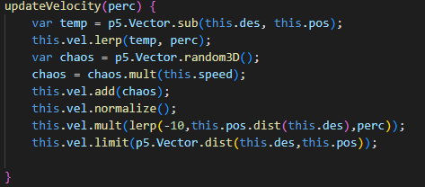

Experiment 5 - 3D Space: Atomic Tome
Imitate
I started with a sketch by Carlos Mendes that setup a simple solar system with moving spheres.
after a bit of setup and a changing of textures, I got it up on my webpage and ready to mess around with it
Integrate
The script I started with had a very nice class structure, but the movement was very simple, and I wanted to be able to move in different ways. so I setup a new class called starParticle, and represented its velocity, current position, and destination as vectors, so that 3d movement math could be done easier.
it took me a while but I got the star/particle to move towards a given destination, by lerping it's velocity to move closer to the given destination.

I didn't quite know what I was making yet, but I knew I wanted the particles and movement to have some connection to the scene. so I added a 3d book model into the scene, with the idea that I could have the stars/particles flying out of the book.
Innovate
With the ability to mke the particles fly towards a given point I started trying to make the movement a little less linear A to B. At first I wanted to make a continuous stream of particles fly out of the book, however in messing with the movement towards the endpoint I accidentally made the particle kind of jitter around as it moved towards destination, and I thought it looked very interesting so I did it more intentionally. I started updating the destination every frame and pretty soon had a particle orbiting around in a jittering motion that reminded me of some kind of atomic particle.
I added more of these particles all going towards the same moving destination and I liked it's odd movement patterns. I wanted to add some kind of tail tracing the movement of each particle. I landed on the idea of not redrawing the background every frame, this way all the past frame renders of the particles would remain, and leave a trace of its movement.
I made a new class that contained many of these particles, and a specific destination point for them, this way I could have multiple of these particle groups all flying around.
I wanted to give each particle a little more contrast, and after a lot of fiddling with the color and lighting, I was able to give each particle it's own color, and a light soure to shine on them in the middle where the book sits.
with some slight alterations to make the movement more precise and some additional particles, I found a cool endpoint
Reflection
this was a solo project. In previous experiments I had a clear vision right from there start, so this time I tried to go in without any preconieved notion of what I wanted it to turn into.
I think this process certainly took me to some results I did not expect, the eratic movement of the particles came from me origionally wanting to make them smoothly rotate from moving in one direction to moving towards their given endpoint, but the more I messed with it the weirder it got. I decided to try and work with chaotic movement to the destination, and found that moving the destination itself made for more interesting patterns.
by far the biggest pain was lighting everything. p5js does not enjoy you messing with frames, textures, and lighting all at once. The trails behind the particles rely on not redrawing the background or book until the camera moves, but I also needed to make sure they were lit. I originally had the background and book redraw using the mouseDragged and mousePressed functions, but I think there was some kind of miss timeing that them lose all lighting when I redrew the pointLight after they were drawn.
Some of the final changes really brought the whole thing together. I was having the destination point radius be random at first, which made the placement of the particles just look off and sometimes not very interesting. By fixing the radius of the destination points of each field, I was able to bring a sense of composure to the erratic jittering of the individual particle that I think looks nice. The overlapping of the trails also gives it a cool kind of impossible object look when you let it go for a while that I really enjoy
Results
click the left mouse button and drag to both reset the trails and rotate the camera